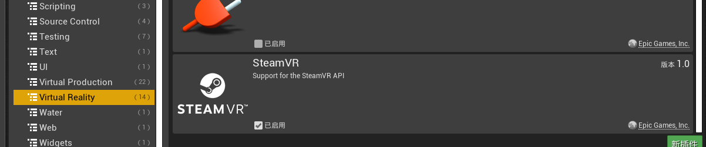
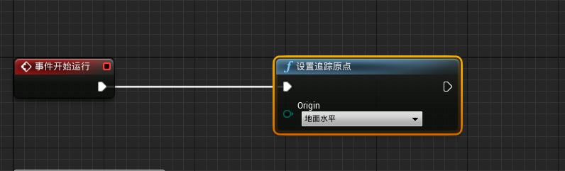

LarkAR 云端 Unreal 应用接入 Demo
OpenVR 支持
云端应用主要需要集成 OpenVR 支持，在 Unreal 中具体步骤如下：
- 确保启用 steamvr 插件

- 确保启动时启用VR模式
设置站立式相机
新建 VRPawn 蓝图并添加一个场景组件和一个Camera

- 在该蓝图中添加事件开始运行时执行设置追踪原点（Set Tracking Origin）节点

- 将该 Pawn 添加到场景中并且设置为自动控制玩家。

设置背景透明
在云渲染 AR 模式下，需要将视频与摄像机画面叠加起来。要设置 Unreal 渲染处透明背景。
- 首先关闭天空盒和雾等背景。勾选在游戏中隐藏。

- 在设置中搜索 alpha，在后期处理选项中选择允许通过色调映射器选项。
开启该选项后需要重新启动并重新编译着色器

- 上传到 LarkXR 后台，要注意许通过色调映射器 选项跟 LarkXR 后台 alpha 遮罩功能对应。如果不选择透明遮罩功能将导致客户端叠加的透明通道反向。
客户端访问效果